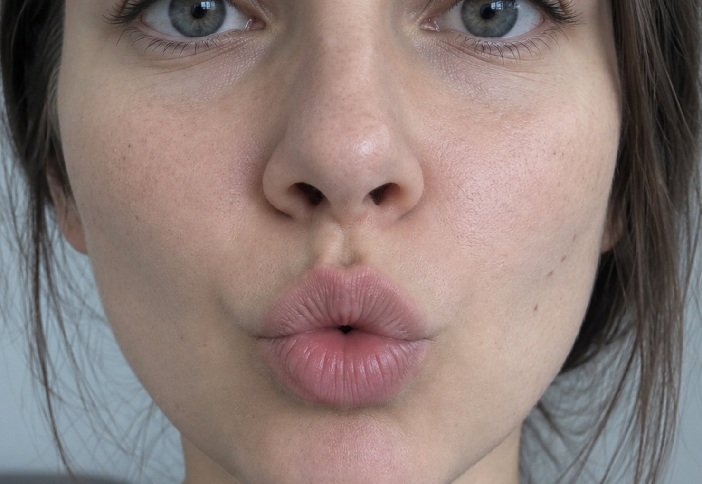

ИИ-коуч английского произношения
Пусть мир услышит вашу экспертность вместо акцента.
Приложение через камеру и микрофон сканирует вашу мимику и произношение, выдавая подсказки к каждому звуку — без стресса и стеснения. Оттачивайте звуки наедине с собой каждый день, и вас поймут в любой точке мира.
Работает в браузере с компьютера или телефона. Нужна только камера.

ваша артикуляция эталон
Губы слишком собраны в трубочку — как для русского «у». В британском /uː/ они шире и округлены слабее.
Знакомо?
Это не про уровень языка. У вас может быть B2–C1 и богатый словарь, и все равно каждый разговор идет с трением.
Sorry?И вы повторяете громче. Громче — не помогает.
Could you spell that?Имя, город и почту приходится диктовать по буквам каждый раз.
Let me put it simplyС вами переходят на упрощенный английский, как с ребенком.
Your English is very good!Сказано тем тоном, после которого понятно: акцент услышали первым.
И обратная сторона
Носители говорят потоком, в котором не найти границы слов. Эти слова вы прекрасно знаете на письме — и не узнаете на слух.
Звук ставится отдельно
Произношение — не следствие уровня. Можно годами набирать грамматику и словарь, а звук так и останется там, где его оставили в школе.
Один цикл — двадцать секунд
Столько занимает одно повторение. Из повторений и складывается тренировка.
Слушаешь
Модель звука, слова или фразы: медленно и в нормальном темпе.
Повторяешь
Камера и микрофон включены. Одна попытка — несколько секунд.
Видишь разбор
Что сделал рот, что получилось со звуком и где расхождение с моделью.
Пробуешь снова
С конкретной подсказкой, а не с «еще раз, только лучше».
И так по кругу, пока звук не встанет. Пятнадцать–двадцать минут в день.
Камера показывает, что сделать ртом. Звук проверяет, получилось ли
Что видит камера
- Раскрытие челюсти
- Округление и растяжение губ
- Смыкание губ и губы-зубы — /p b m/, /f v/
- Кончик языка между зубами — /θ ð/
- Общее напряжение артикуляции
Что слышит звук
- Качество и длительность гласного
- Звонкость и оглушение в конце слова
- Придыхание /p t k/ в начале слога
- Чистота смычки и отсутствие лишнего гласного в кластерах
- Расхождение с моделью — что именно и насколько
По отдельности не работает ни то, ни другое. Зеркало показывает рот, но не дает ни эталона, ни вердикта. Запись дает звук, но не объясняет причину.
Камера не видит тело языка, мягкое небо и связки — это закрывает звук. Вместе получается не просто «неверно», а «вот что сделай ртом, чтобы стало верно».
Три ситуации
Преподавателя нет
Не нашлось, дорого, не совпали часовые пояса, или просто пока не готовы начинать с человеком. Тогда это способ начать по-настоящему, а не посмотреть пару роликов и бросить.
Занимаешься с преподавателем
Занятие раз в неделю, а навык строится каждый день. Приложение закрывает шесть дней между занятиями: приходите с наработанным, и час уходит на сложное, а не на повторение базы.
Курс уже закончен
Произношение — физический навык, он осыпается без нагрузки. Короткая регулярная практика удерживает форму, за которую уже заплачено временем и деньгами.
Что тренажер делает сейчас — и что будет дальше
Звуки
- Речевой аппарат и IPA: как читать транскрипцию и что делать ртом
- Гласные: длина и качество, дифтонги, шва
- Согласные и кластеры: /θ ð w r ŋ/, придыхание, оглушение
- Минимальные пары — на слух и в собственной речи
- Запись «до» и сравнение с ней через месяц
Речь
- Ритм, ударение и слабые формы
- Связная речь: linking, ассимиляция, элизия
- Интонация и тоны
- Shadowing и перенос в спонтанную речь
Это не урезанная версия, а правильный порядок. Над ритмом и интонацией нельзя работать, пока не встают звуки: с этого начинается любая системная программа. Как устроена методика →
Практика каждый день. Не раз в неделю.
Приложение еще не запущено. Оставьте почту — напишем, когда откроем ранний доступ, и позовем первыми.